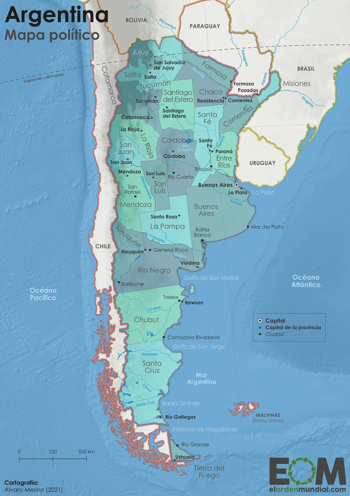
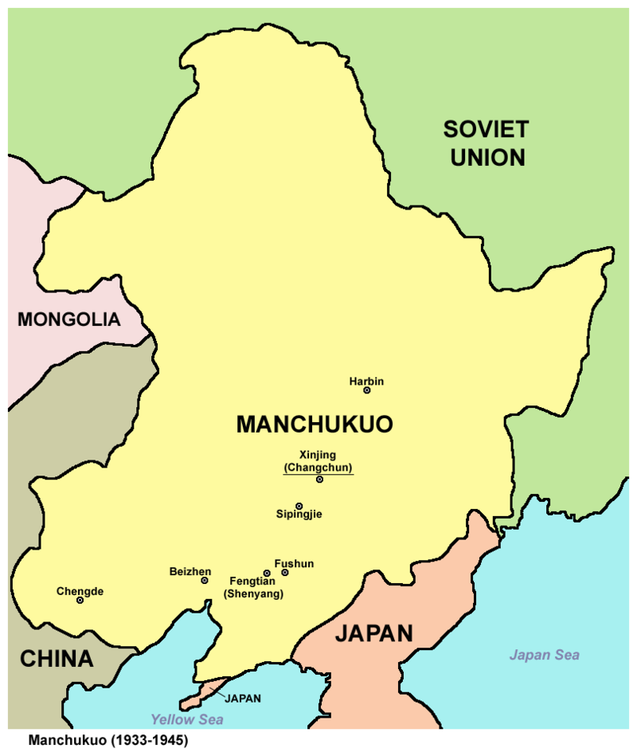
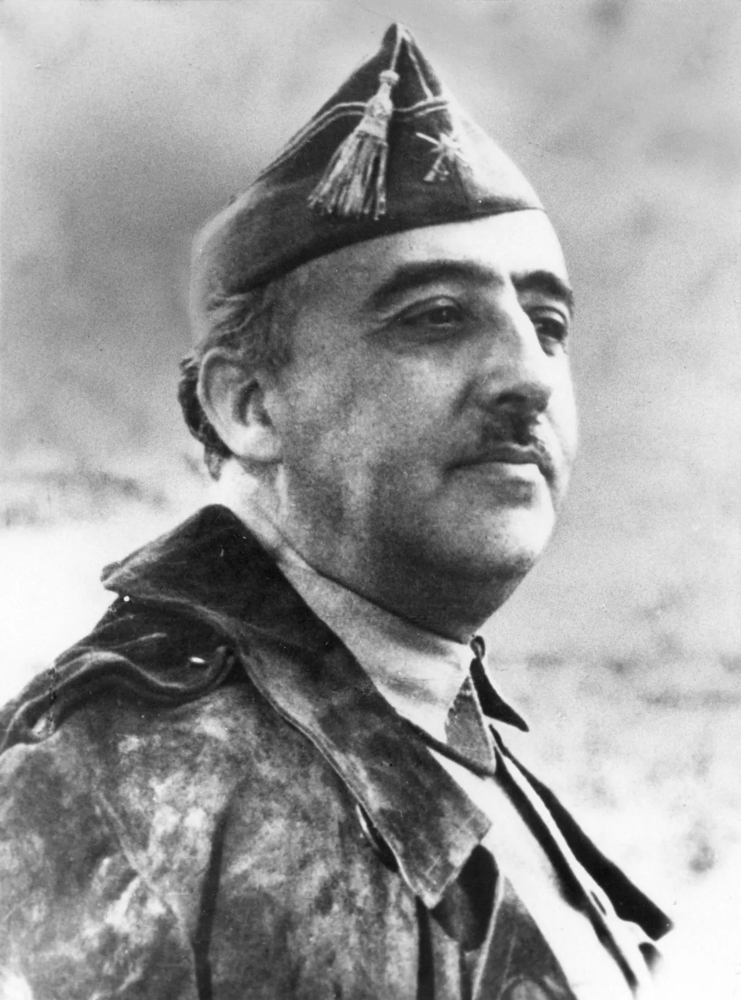
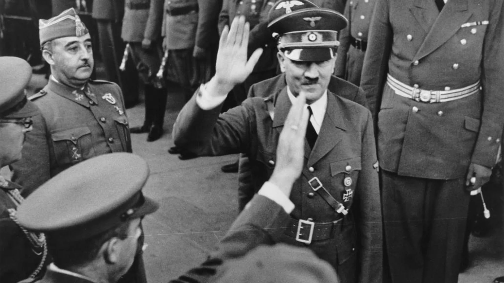

Hitler y Argentina

Si te pones a investigar sobre la Segunda Guerra Mundial y te dejas seducir por ciertas lecturas, llegara a
ti tarde o temprano este "Mito" que además actualmente tiene problemas judiciales abiertos y es que en
cierto momento surgio el rumor aumentado por un libro escrito por un historiador y un periodista que habla
sobre la posibilidad de que Hitler huyera a latinoamerica ante la entrada de las fuerzas aliadas y
sovieticas en Berlin, este mito es absurdo, cuando se entro en Berlín y se descubrio el bunker se encontro
tanto a la familia como a Hitler sin vida.


Hiroshima y Nagasaki, el espiritu japones.
Se suele decir que Japón se rindio debido al estallido de las bombas en Hiroshima y una vez recuperado un
poco de la guerra aprovecho que Japón estaba en las ultimas más con las dos bombas caidas,invadio Japón el 8
de agosto de 1945 provocando la rendición un més después ante la invasión de la URSS en lo que era Manchuria
que era un país titere de Japón.
Franco y Hitler y el por que no entramos en la segunda guerra mundial


Se suele decir o hay un mito sobretodo en ciertos grupos entre ciertas personas que se meten en el punto de
cuando Hitler se paseo por España para hablar con Franco sobre la entrada de España en la guerra. Hay un
mito de que Franco llego tarde a la cita para poner nervioso a Hitler y que accediera mas facil a las
pretensiones de España y poner una excusa y justo llegar a hacer el trato mejor, pero aquí fallan muchas
cosas y es que a Hitler no le caia muy bien Franco y además las pretensiones de España que tenia, es decir,
no fue por que Franco hiciera eso, si no que fue las pretensiones y el no caerle bien a Hitler debido a que
España queria Gibraltar, grandes partes de Africa y parte de Francia lo que no le gusto a Hitler, además de
que España no estaba preparada para una guerra.